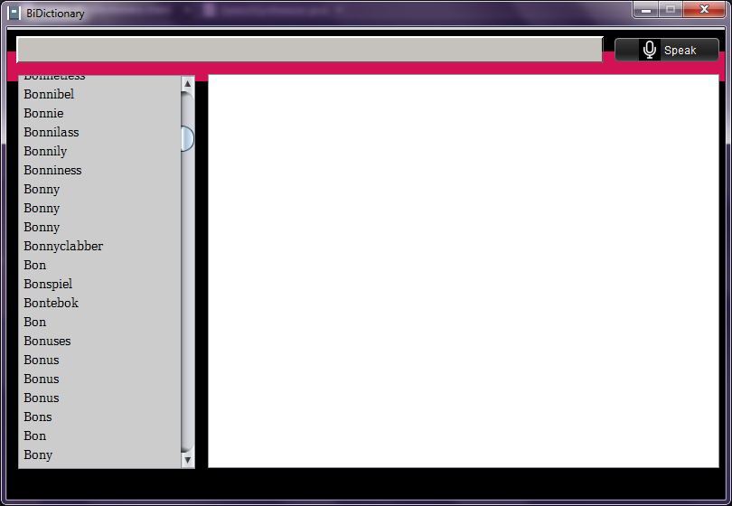

Build Dependencies:
Guide to Run the Project on Windows NetBeans
- Download the Source Code using one of these steps
- Click Clone or Download
- Then Open in Desktop (if you've GitHub for Desktop)
- Download ZIP and extract the Dictionary folder to a working directory.
- Click Fork (well if you're a Git Pro you have already done that).
- Now open IDE of your preference and "Open Project" and select the Project folder named "Dictionary".
- It'd best if you're using NetBeans as the project was built using NetBeans and follows it's folder structure and this tutorial also currently give detailed steps for NetBeans.
Or you can follow these steps to [run on Eclipse](http://stackoverflow.com/questions/21535023/how-to-get-your-netbeans-project-into-eclipse) - Make sure your mbrola and FreeTTS(steps are below) libraries are installed with the project or it'll give Run Time Error.
- Then Build and Run the Project, it should open up a window like this: 
- Try Searching for a word like "Zythum" and click on the "Speaker" icon to start the Speech Synthesis.
How to add FreeTTS libraries to your Project
- Download FreeTTS 1.2.2 zip file from [here](https://sourceforge.net/projects/freetts/files/FreeTTS/FreeTTS%201.2.2/freetts-1.2.2-bin.zip/download)
- Extract freetts-1.2/lib folder from freetts-1.2.2-bin.zip in a temp directory
- cmu_time_awb.jar
- cmu_us_kal.jar
- cmudict04.jar
- cmulex.jar
- cmutimelex.jar
- en_us.jar
- freetts.jar
- freetts-jsapi10.jar
- mbrola.jar
- When you add your Project Folder to NetBeans, it'll ask you to resolve Library error. Click on "Resolve".
- Click on "Add New Library", name it "FreeTTS", click Ok.
- It should probably say Resolved now. Click Close.
How to configure mbrola for FreeTTS:
- [Follow these steps](http://freetts.sourceforge.net/mbrola/README.html)
Installation Errors caused by mbrola, FreeTTS or OpenJDK
- You are bound to have errors if you're using OpenJDK, here's a guide to resolve those by installing [Sun JDK on Linux](http://www.devsniper.com/ubuntu-12-04-install-sun-jdk-6-7/)
- If FreeTTS library is not being added properly to your project then just Google for "How to add custom libraries to Netbeans/ Eclipse Project".
- If you still are experiencing issues with FreeTTS or mbrola, then try checking out these links:
- [Windows Guide](http://stackoverflow.com/questions/26236562/mbrola-voices-with-freetts-windows)
- [Linux Ubuntu Guide](http://stackoverflow.com/q/5501394/5346439)
Development & Contribution
You should find it easiest to understand as the class/ file names are self-explanatory to what they do. One Class per File is the design approach at it's core.
- Currently it reads from the file names "azdictor.txt". The better approach would be to read from a local Database as it'd be easy-to-modify by the user. Create a local database and modify ParseData.java to read from the Database.
- Add a way to add/ update/ delete the terms by the user locally.
- Improve the comment quality. Cross-verify either through the IDE or using JavaDocs.
- Easier way to modify the configuration using a .config file. Currently It's hard-coded like the file name or the mbrola properties.
- Logger needs to be implemented through out the application to generate a log and error file separately on the client PC. It'd be easier to debug using Log/ Error files.
- Finally Generate a .exe, pack it with the custom FreeTTS libraries and mbrola voices, and make the package installer.
Authors and Contributors
Date: May, 2016 Authors: cfx
Support or Contact
Having trouble with Pages? Check out our documentation or contact support and we’ll help you sort it out.